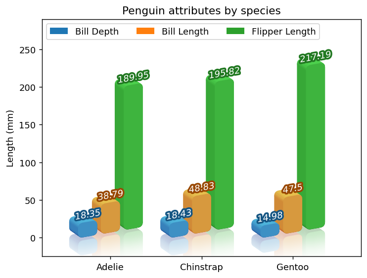
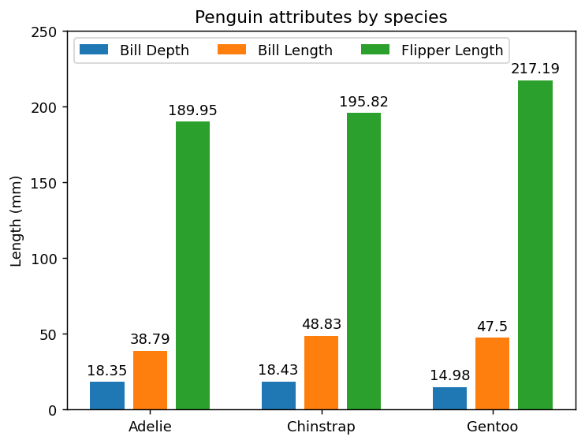
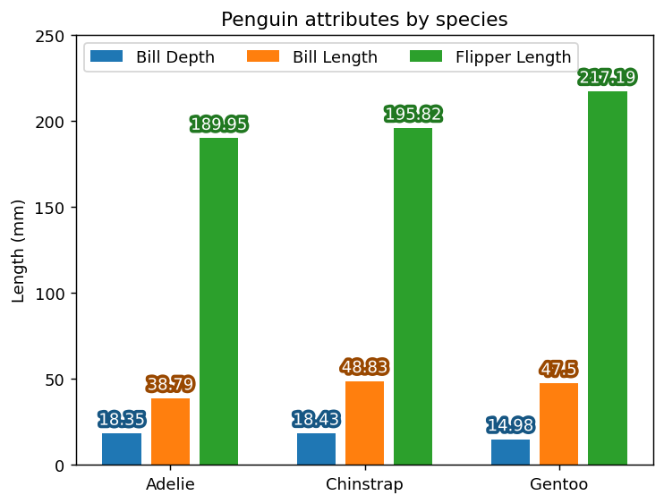
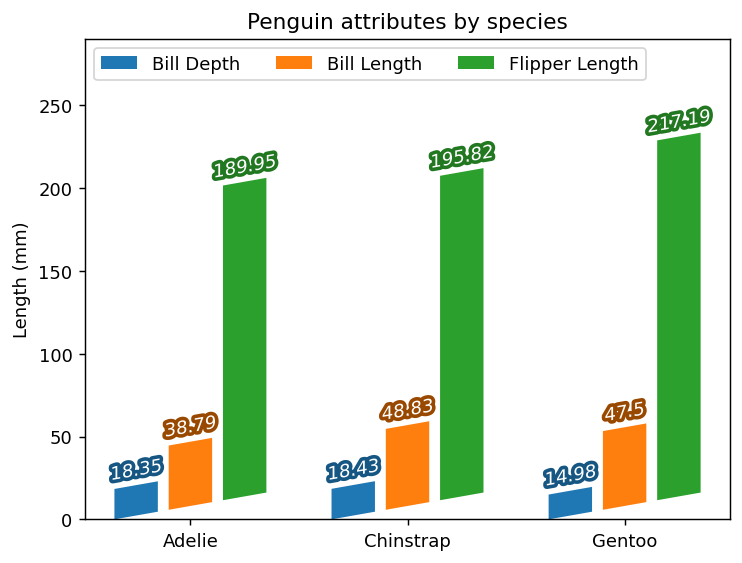
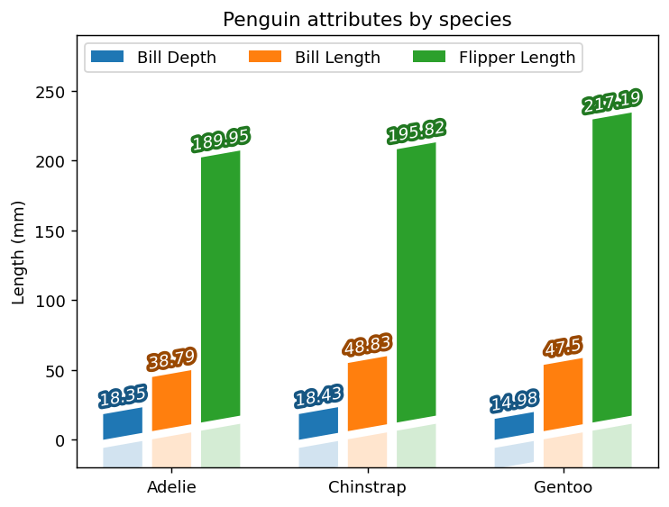
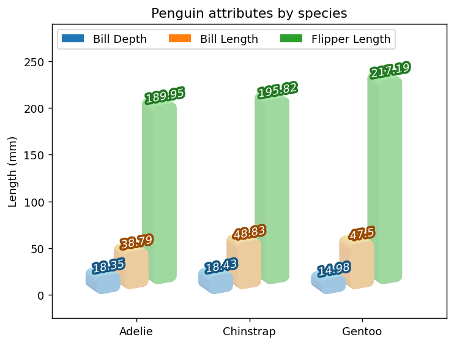
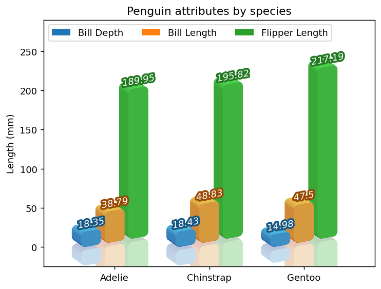

In this post, we will make a bar chart. We will use Matplotlib to make a original plot. Then, with the help of mpl-visual-context, we will skew the bars and add some 3d effect. Finally, some reflection-like effect
Code
import matplotlib.pyplot as pltimport numpy as npfig, ax = plt.subplots(num=1, clear=True)# We start from mpl example "Grouped bar chart with labels". The only change# we made is to increase the offset slightly so that bars are separated.species = ("Adelie", "Chinstrap", "Gentoo")penguin_means = {'Bill Depth': (18.35, 18.43, 14.98),'Bill Length': (38.79, 48.83, 47.50),'Flipper Length': (189.95, 195.82, 217.19),}n_species =len(species)x = np.arange(len(species)) # the label locationsn =len(penguin_means)space_between_species =0.3space_between_attributes =0.05bar_width = (1- space_between_species - (n-1) * space_between_attributes) / noffset_between_attributes = np.arange(n) * (bar_width + space_between_attributes)label_offset = (1- space_between_species) *0.5for o, (attribute, measurement) inzip(offset_between_attributes, penguin_means.items()): rects = ax.bar(x + o + bar_width*0.5, # bar_width*0.5 is needed as the bar# is centered at the given position. measurement, bar_width, label=attribute) ax.bar_label(rects, padding=3)# Add some text for labels, title and custom x-axis tick labels, etc.ax.set_ylabel('Length (mm)')ax.set_title('Penguin attributes by species')ax.set_xticks(x + label_offset, species)ax.legend(loc='upper left', ncols=n)for i inrange(n_species):for z, p inenumerate(ax.patches[i::n_species]): p.set_zorder(p.get_zorder() - z*0.01)ax.set_xlim(-0.4, 3.1)ax.set_ylim(-25, 290)import mpl_visual_context.patheffects as pefrom mpl_visual_context.patheffects_image_effect import ImageClipboardfrom matplotlib.colors import LightSourcefrom mpl_poormans_3d import Poormans3d, Poormans3dFacefrom mpl_visual_context.artist_helper import ArtistListWithPEfrom mpl_visual_context.patheffects_image_effect import ReflectionArtistdef colored_thick_line(c):"patheffect to make thick outline with given color with lightness set at 0.3"return pe.GCModify(linewidth=4) | pe.StrokeColor(c) | pe.HLSModify(l=0.3)ic = ImageClipboard()ic_flipped = ImageClipboard()tr_skew = pe.PostAffine().skew_deg(0, 10)ls = LightSource(azdeg=170)p3d = Poormans3d(ls, displacement=(-10, 7), fraction=0.5)p3d_face = Poormans3dFace(ls, displacement=(0, 0), fraction=0.5)rc = pe.RoundCorner(5)ic= ImageClipboard()ic_flipped = ImageClipboard()for i inrange(n_species): tr_recenter = pe.Recenter(ax, i, 0, coords="data") skew = tr_recenter | tr_skew | tr_recenter.restore() skew_flipped = (tr_recenter | pe.PostAffine().scale(1, -1)| tr_skew | tr_recenter.restore() | pe.Offset(0, -5)) pe_reflection = [ rc | skew_flipped | p3d | ic_flipped.copy(), rc | skew_flipped | p3d_face | ic_flipped.copy(), rc | skew | p3d | ic.copy(), rc | skew | p3d_face | ic.copy() ] a_flipped = ArtistListWithPE(ax.patches[i::n_species], pe_reflection) a_flipped.set_zorder(0.5) ax.add_artist(a_flipped)for p, t inzip(ax.patches[i::n_species], ax.texts[i::n_species]): p.set_path_effects([skew | rc | p3d, skew | rc | p3d_face, ]) t.set_path_effects([skew | colored_thick_line(p.get_fc()), skew | pe.FillColor("w") ])a = ReflectionArtist(ic_flipped, clipboard_alpha=ic, alpha_dist_sigma=20, # image will become transparent about# 20 points away from the originl# imge. clear_alpha=True# make sure that clipboard_alpha is cleared after use. )a.set_zorder(0.7)ax.add_artist(a)plt.show()

Starting from a simple bar chart
We start from mpl example Grouped bar chart with labels. The only change we made is to increase the offset slightly so that bars are separated.
import matplotlib.pyplot as pltimport numpy as npfig, ax = plt.subplots(num=1, clear=True)species = ("Adelie", "Chinstrap", "Gentoo")penguin_means = {'Bill Depth': (18.35, 18.43, 14.98),'Bill Length': (38.79, 48.83, 47.50),'Flipper Length': (189.95, 195.82, 217.19),}x = np.arange(len(species)) # the label locationsn =len(penguin_means)space_between_species =0.3space_between_attributes =0.05bar_width = (1- space_between_species - (n-1) * space_between_attributes) / noffset_between_attributes = np.arange(n) * (bar_width + space_between_attributes)label_offset = (1- space_between_species) *0.5for o, (attribute, measurement) inzip(offset_between_attributes, penguin_means.items()): rects = ax.bar(x + o + bar_width*0.5, # bar_width*0.5 is needed as the bar# is centered at the given position. measurement, bar_width, label=attribute) ax.bar_label(rects, padding=3)ax.set_ylabel('Length (mm)')ax.set_title('Penguin attributes by species')ax.set_xticks(x + label_offset, species)ax.legend(loc='upper left', ncols=3)_ = ax.set_ylim(0, 250) # To suppress the echo

Coloring bar labels
Let’s start with simple patheffect. We will change the color of bar labels. by adding patheffects so that they have similar color to the bar themselves.
import mpl_visual_context.patheffects as pedef colored_thick_line(c):"patheffect to make thick outline with given color with lightness set at 0.3"return pe.GCModify(linewidth=4) | pe.StrokeColor(c) | pe.HLSModify(l=0.3)for p, t inzip(ax.patches, ax.texts): t.set_path_effects([colored_thick_line(p.get_fc()), # thick outline with# same color as the# bar. pe.FillColor("w") # draw the text with white fill. ])

Skewed bar charts
We would like to make bars between different species, more distinguished. Let’s skew the bars. We need the bars of same origin share the skew origin while different species have different skew origin.
To introduce simple skew, we will use PostAffine class. This lets you skew the path in the screen coordinate.
tr_skew = pe.PostAffine().skew_deg(0, 10)
We want the origin of the skew, for each species, set at the lower left corner of the left most bar. This is doen by Recenter class. Note that in most case, you change the center, apply the transform, then recover the original origin. For example, the code below sets the origin at (i, 0) in data corrdinate, apply skew, then recover the original origin.
for i inrange(3): tr_recenter = pe.Recenter(ax, i, 0, coords="data")# Thi is to set the origin of the skew, which is (i, 0) in the data# coordinate. skew = tr_recenter | tr_skew | tr_recenter.restore()# Recenter changes ths coordindates, so in most cases, it should be resotred.for p, t inzip(ax.patches[i::3], ax.texts[i::3]): # The slice is to# select the bars (and# texts)in the same# specie group. This may depend # on seaborn version p.set_path_effects([skew])# bar labels are also being skewed. The skew is combined with coloring. t.set_path_effects([skew | colored_thick_line(p.get_fc()), skew | pe.FillColor("w") ])# we adjust the and ylim to make a room for skewed artists.ax.set_ylim(0, 290)

Reflection?
Let’s see if we can draw reflected image. We try this by flipping the coordinate vertically and make it transparent. We also like to offset the flipped bar downward by 5 points. The combined pathffect should look like below
tr_skew = pe.PostAffine().skew_deg(0, 10)for i inrange(3): tr_recenter = pe.Recenter(ax, i, 0, coords="data") skew = tr_recenter | tr_skew | tr_recenter.restore() skew_flipped = (tr_recenter | pe.PostAffine().scale(1, -1)| tr_skew | tr_recenter.restore() | pe.Offset(0, -5))for p, t inzip(ax.patches[i::3], ax.texts[i::3]): p.set_path_effects([skew, skew_flipped | pe.GCModify(alpha=0.2)])# we flip the bar and also make it transparent. t.set_path_effects([skew | colored_thick_line(p.get_fc()), skew | pe.FillColor("w") ])# Again, we adjust the ylim to better show flipped box.ax.set_ylim(-20, 290)

3D effects
Let’s set aside the reflection for now. Instead, we will add 3d effects to the bars. For the 3d effects, we wii use mpl_poormans_3d. Please check mpl_poormans_3d for more details.
mpl-poormans-3d is not smart enought to make the scence correct and we need to manually fix the issue. The overwrap between adjacent bars can be avoided by adjusting their zorders. We want the left most bar in the same group is drwan last.
for i inrange(3):for z, p inenumerate(ax.patches[i::3]): p.set_zorder(p.get_zorder() - z*0.01) ax.set_xlim(-0.4, 3.1)ax.set_ylim(-25, 290)
We would like to add reflection effects to the bars in 3d. Unfortunately this can not be simply done by adjusting alpha. The 3d effects are done by drawing many rectangles with different colors, partly overwrapping. And overwrapping regions will become more opaque than other regions.
One way to overcome this is to use image-clipboard. The clipboard will let you save the result of the patheffect to an image and reuse it later, optionally applying imageffect. For our purpose, we will capture the 3d bars as an image and paste it later (as an image) with transparency.
from mpl_visual_context.patheffects_image_effect import ImageClipboardimport mpl_visual_context.image_effect as ieic = ImageClipboard()for i inrange(3): tr_recenter = pe.Recenter(ax, i, 0, coords="data") skew = tr_recenter | tr_skew | tr_recenter.restore()for p in ax.patches[i::3]: p.set_path_effects([skew | rc | p3d | ic.copy(),# copy will draw the artist in the clipboard, but# not on the screen. skew | rc | p3d_face | ic.copy(), ic.paste(ie.AlphaAxb((0.5, 0)))# paste will draw the clipboard image on the# screen, optionally apllying image-effects. ])
Reflection with 3d effects : attempt 2
The above approch works to some degree, but can be improved. In the above approach, the clipboard is copied and pasted for each bar. We will collcet all the bars in a single clipboard and have it pasted.
from mpl_visual_context.patheffects_image_effect import ClipboardPasteArtistic = ImageClipboard()for i inrange(3): tr_recenter = pe.Recenter(ax, i, 0, coords="data") skew = tr_recenter | tr_skew | tr_recenter.restore()for p in ax.patches[i::3]: p.set_path_effects([skew | rc | p3d | ic.copy(), skew | rc | p3d_face | ic.copy(), ])# without past, nothing will be drawn on screent at this stage.a = ClipboardPasteArtist(ic, ie.AlphaAxb((0.5, 0)))a.set_zorder(1.5) # we need to make sure that this is drawn after the bars# (i.e., they should have copied to the clipboard before# getting pasted.)ax.add_artist(a)

Reflection with 3d effects : attempt 3
We will repeat above attempt, but with the flipped bars. This is more complicated.
At zorder 0.5, we will draw flipped bars to the clipboard.
At zorder 0.7, the contents of the clipboard will be pasted with transparency.
At zorder 1, the original artist will be drawn.
The value of zorder does not matter as far as they are processed in this order.
For step 1, we will use ArtistListWithPE which is a artist that draws a given list of artist with patheffect applied. This can be useful if a selection of artists need to be drawn multiple times at different zoder.
First, we will remove clipboard_paste_artists that is added previously.
for a in ax.artists: a.remove()
from mpl_visual_context.artist_helper import ArtistListWithPEic_flipped = ImageClipboard()for i inrange(3): tr_recenter = pe.Recenter(ax, i, 0, coords="data") skew = tr_recenter | tr_skew | tr_recenter.restore() skew_flipped = (tr_recenter | pe.PostAffine().scale(1, -1)| tr_skew | tr_recenter.restore() | pe.Offset(0, -5)) pe_flipped = [ rc | skew_flipped | p3d | ic_flipped.copy(), rc | skew_flipped | p3d_face | ic_flipped.copy() ] a_flipped = ArtistListWithPE(ax.patches[i::3], pe_flipped) a_flipped.set_zorder(0.5) ax.add_artist(a_flipped)# The original bars will be drawn with 3d effects.for p in ax.patches[i::3]: p.set_path_effects([skew | rc | p3d, skew | rc | p3d_face, ])a = ClipboardPasteArtist(ic_flipped, ie.AlphaAxb((0.3, 0)))a.set_zorder(0.7)ax.add_artist(a)

Reflection with 3d effects : final attempt
We are almost done. We want the reflection fades away for distant object.
Again, we will remove any extra artists we create in previous steps.
for a in ax.artists: a.remove()
We will use RefelctionArtist. ReflectionArtist is similar to ClipboardPasteArtist, but is specialized to draw refelection images which fades away from the original image. The initialization of RefelctionArtist requires two clipboard, one for reflected, the other for the original.
from mpl_visual_context.patheffects_image_effect import ReflectionArtistic= ImageClipboard()ic_flipped = ImageClipboard()for i inrange(3): tr_recenter = pe.Recenter(ax, i, 0, coords="data") skew = tr_recenter | tr_skew | tr_recenter.restore() skew_flipped = (tr_recenter | pe.PostAffine().scale(1, -1)| tr_skew | tr_recenter.restore() | pe.Offset(0, -5)) pe_reflection = [ rc | skew_flipped | p3d | ic_flipped.copy(), rc | skew_flipped | p3d_face | ic_flipped.copy(), rc | skew | p3d | ic.copy(), rc | skew | p3d_face | ic.copy() ] a_flipped = ArtistListWithPE(ax.patches[i::3], pe_reflection) a_flipped.set_zorder(0.5) ax.add_artist(a_flipped) # note again that this won't draw anything on the# screen, only in the clipboard.# We draw the original bars with 3d effects. For the agg# backend, we may paste the content of the ic. But for pdf backend, this may# be better as it produces vector output. pe_original = [ skew | rc | p3d, skew | rc | p3d_face, ]for p in ax.patches[i::3]: p.set_path_effects(pe_original)a = ReflectionArtist(ic_flipped, clipboard_alpha=ic, alpha_dist_sigma=20, # image will become transparent about# 20 points away from the originl# imge. clear_alpha=True# make sure that clipboard_alpha is cleared after use. )a.set_zorder(0.7)ax.add_artist(a)
For the final code, take a look at the folded code at the top, or the linked page.